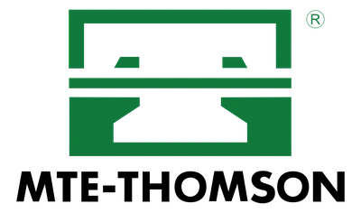

Baterias, alternadores, motores de partida, iluminação, sensores, chicotes, relés e fusíveis para veículos leves e utilitários. Consulte a aplicação exata com nossa equipe especializada em Nova Friburgo.
Acumulador químico responsável por fornecer corrente imediata ao motor de partida e alimentar circuitos de memória e standby. Modelos selados livres de manutenção com alta corrente de partida (CCA).
Marcas Homologadas:BOSCHHELIARMOURA
Linha Carga & Partida
Bosch / Linha Líder
Bateria Automotiva 60Ah Selada
60Ah Selada livre de manutenção. Alta corrente de partida a frio (CCA) para veículos médios, sedãs e SUVs compactos. Confirme a polaridade e altura da caixa.
Nunca escolha a bateria apenas pela amperagem. O valor de CCA (Corrente de Partida a Frio) determina a facilidade de giro nas manhãs frias de Nova Friburgo. Além disso, a posição dos polos (positivo direito ou esquerdo) deve respeitar o comprimento dos cabos originais do carro.
Dica de Aplicação:
Veículos com Start-Stop exigem baterias de tecnologia EFB ou AGM. Instalar bateria convencional nesses modelos reduz severamente sua vida útil.
O alternador gera corrente alternada, retifica para corrente contínua e mantém a tensão da rede em patamares seguros (13,8V a 14,4V), suprindo ar-condicionado, faróis, injeção e recarregando a bateria.
Marcas Homologadas:BOSCHVALEOMAGNETI MARELLI
Conjunto Alternador
Valeo / Bosch
Alternador 12V 90A
Unidade geradora com polia e regulador integrado. Suprimento estável de corrente para a rede elétrica e recarga contínua. Consulte a corrente nominal e suporte de fixação.
Com o motor em funcionamento, a tensão medida nos polos da bateria deve ficar tipicamente entre 13,8V e 14,4V. Tensões abaixo de 13,5V indicam carga insuficiente (descarregando a bateria aos poucos); tensões acima de 14,8V indicam sobretensão perigosa por defeito no regulador, podendo ferver a bateria e queimar módulos.
Motor elétrico de engrenamento temporário com solenoide (automático) e redutor planetário para imprimir rotação mecânica inicial no volante do motor térmico com mínimo esforço de corrente.
Marcas Homologadas:BOSCHVALEODELPHI
Conjunto Motor de Partida
Bosch / Valeo
Motor de Partida 12V 1.4kW
Conjunto montado com redutor planetário e solenoide de engrenamento rápido. Excelente partida mesmo em baixas temperaturas. Verifique número de dentes do pinhão.
Se o motor gira lentamente com luzes fracas, o sintoma geralmente aponta para bateria com baixa carga. Porém, se ouve-se um forte "clique" metálico mas o motor nem tenta girar enquanto os faróis permanecem acesos, o problema pode estar no contato interno do solenoide ou no desgaste das escovas de carvão do motor de partida.
Lâmpadas para faróis principais (alto e baixo), faróis auxiliares de neblina, lanternas traseiras, setas e freio. Componentes homologados com foco preciso e potência adequada.
Marcas Homologadas:OSRAMPHILIPS
Farol Principal
Lâmpadas Halógenas (H1, H4, H7, H11)
Padrão de potência original (55W / 60W) que preserva a fiação e os refletores plásticos contra calor excessivo, oferecendo feixe de luz calibrado para não ofuscar motoristas no sentido oposto.
Transdutores essenciais para a ECU gerenciar o ponto de ignição, injeção de combustível e emissão de poluentes. Sensores de oxigênio (sonda lambda), rotação, fase, pressão e temperatura.
Marcas Homologadas:MTE-THOMSONBOSCHDELPHI
Emissões & Consumo
MTE / Bosch
Sensor de Oxigênio (Sonda Lambda)
Monitora a quantidade de oxigênio nos gases do escapamento para cálculo da mistura estequiométrica ideal. Opções pré e pós catalisador com conector plug-and-play.
Componentes vitais para a comutação, transformação de alta tensão e proteção térmica dos condutores elétricos do veículo contra curtos-circuitos.
Ignição
Bobinas de Ignição Individuais e Bloco
Transformam a tensão de 12V da bateria em milhares de volts para o centelhamento das velas. Modelos caneta (individuais por cilindro) e blocos múltiplos com isolamento de alta rigidez dielétrica.
Fusíveis de lâmina calibrados de 5A a 60A com código de cor padrão internacional. Corpo em termoplástico de alta resistência a chamas e lâminas em liga de zinco.
O sistema elétrico é o coração funcional de qualquer veículo moderno. Conheça as atribuições técnicas de cada conjunto para entender como identificar sintomas e manter a confiabilidade automotiva.
01
A Bateria
Armazena energia química para conversão elétrica. Alimenta os sistemas com o motor desligado, fornece o pico inicial de partida e atua como estabilizador de tensão para amortecer picos gerados na rede.
02
O Alternador
Transforma energia mecânica da correia em eletricidade. Quando o motor funciona, ele assume 100% da demanda elétrica do veículo e recarrega a energia consumida da bateria durante a partida.
03
Motor de Partida
Motor elétrico de corrente contínua dimensionado para girar o virabrequim a cerca de 200 a 300 RPM. Opera por poucos segundos exigindo correntes que podem ultrapassar 150 a 250 ampères.
04
Fusíveis de Proteção
Elos de segurança calculados para derreter por efeito Joule antes que a fiação atinja temperatura de ignição em sobrecargas. Devem ser sempre substituídos pela mesma amperagem nominal.
05
Relés Eletromecânicos
Chaves controladas magneticamente que evitam que altas correntes passem pela chave de ignição ou interruptores do painel, garantindo menor perda de tensão e máxima vida útil aos comandos.
06
Sistema de Iluminação
Responsável pela visibilidade noturna e sinalização ativa de manobras. O uso de lâmpadas com potência inadequada pode derreter soquetes, manchar o refletor e sobrecarregar o chicote.
07
Sensores & Injeção
Convertem parâmetros físicos (pressão, rotação, temperatura e oxigênio) em sinais de tensão milivolt para a central eletrônica calcular a dosagem milimétrica de combustível e o avanço de faísca.
08
Chicotes & Aterramentos
Rede de distribuição e malhas de massa ligadas ao chassi. Mau contato ou corrosão nos pontos de aterramento provocam quedas de tensão e falhas eletrônicas intermitentes difíceis de rastrear.
Funcionamento Integrado
O Ciclo Dinâmico de Carga e Partida
A bateria, o motor de partida e o alternador trabalham em ciclo fechado e contínuo. Entenda a dinâmica que mantém o veículo em movimento:
Fase 1
Repouso & Standby
Com o motor desligado, a BATERIA alimenta exclusivamente os circuitos em standby (alarme, memórias de rádio, ECU e travas elétricas) e retém a energia química necessária para a próxima partida.
Demanda: Baixa corrente contínua
Fase 2
Acionamento da Partida
Ao girar a chave, a bateria descarrega um pico de alta corrente (CCA) no MOTOR DE PARTIDA, que engrena no volante do motor para iniciar os primeiros ciclos de compressão e combustão.
Demanda: Pico extremo (150A a 300A por segundos)
Fase 3
Geração & Recarga
Com o motor em rotação autônoma, o ALTERNADOR é acionado pela correia, assumindo todos os consumidores do carro e restituindo à bateria a energia consumida na partida.
Tensão controlada: 13,8V a 14,4V estáveis
Diagnóstico Preventivo
Sinais que Merecem uma Inspeção
Falhas no sistema elétrico costumam emitir pequenos sinais antes da parada total do veículo. Fique atento a estes 10 indícios e evite imprevistos na estrada:
⚡
Partida Pesada ou Lenta
Motor vira com lentidão ou relutância, especialmente na primeira partida pela manhã.
⚡
Luz da Bateria Acesa
Luz vermelha da bateria piscando ou acesa no painel com o motor em funcionamento.
⚡
Faróis Oscilando
Iluminação que enfraquece em marcha lenta e clareia repentinamente ao acelerar.
⚡
Estalo Seco na Chave
Ao dar a partida ouve-se um clique do relé/automático, mas o motor não dá sinal de giro.
⚡
Bateria Descarregando
Veículo sem carga após passar apenas 1 ou 2 dias desligado na garagem.
⚡
Fusível Queimando Sempre
Queima recorrente de fusível na mesma posição indica curto ou sobrecarga no chicote.
⚡
Queima Frequente de Lâmpadas
Lâmpadas queimando em curto espaço de tempo podem indicar sobretensão do regulador.
⚡
Cheiro de Queimado
Odor característico de verniz ou plástico aquecido perto do alternador ou caixa de fusíveis.
⚡
Falhas Intermitentes
Vidros elétricos lentos, rádio reiniciando sozinho ou ponteiros oscilando sem motivo.
⚡
Ruído no Alternador
Zumbido ou chiado metálico contínuo proveniente dos rolamentos internos do alternador.
Mensagem de Segurança Técnica Tucano Auto Peças
Nenhum sintoma isolado substitui um diagnóstico com equipamento apropriado. Antes de substituir componentes, meça a tensão de carga com multímetro, teste a corrente de fuga parasita e inspecione as conexões de aterramento para evitar trocas desnecessárias de peças em perfeito estado.
Prevenção Inteligente
Manutenção Preventiva do Sistema Elétrico
Revisar os componentes elétricos evita panes repentinas em momentos críticos. Recomenda-se realizar vistorias a cada revisão semestral ou a cada 10.000 km:
✓
Limpeza e Aperto dos TerminaisElimine camadas de zinabre nos polos da bateria com água morna e aplique vaselina protetora neutra para evitar mau contato.
✓
Teste de Tensão do AlternadorVerifique se o alternador está fornecendo entre 13,8V e 14,4V com faróis e ar-condicionado ligados.
✓
Inspeção da Correia de AcessóriosCorreia frouxa ou ressecada patina na polia do alternador, reduzindo drasticamente a capacidade de recarga.
✓
Medição de Corrente de Fuga (Standby)Consumo parasita em repouso deve ficar abaixo de 0,05A (50mA). Valores acima esgotam a bateria durante a noite.
Atenção Especial
Uso Severo do Sistema Elétrico
Certas condições de condução impõem estresse muito superior aos componentes elétricos, exigindo atenção redobrada:
Trajetos Curtos e Frequentes
Rodar menos de 15 minutos não dá tempo ao alternador de repor a energia gasta no motor de arranque, acumulando déficit contínuo de carga.
Tráfego Urbano 'Para e Anda'
Longos períodos em marcha lenta com ventoinha, ar-condicionado e faróis ligados geram demanda maior do que o alternador entrega em rotação baixa.
Frio Serrano e Clima Úmido
Temperaturas baixas tornam o óleo do motor mais viscoso (exigindo mais do arranque) e diminuem em até 30% a eficiência química da bateria.
Acessórios Elétricos Extras
Sistemas de som potentes, amplificadores, rastreadores ou faróis auxiliares instalados sem redimensionamento de fiação e bateria.
Regra de Ouro:
Quanto mais exigente for a rotina do veículo, mais curto deve ser o intervalo de inspeção da bateria e do sistema de carga.
Revisão Completa
Checklist do Sistema Elétrico
Antes de viajar ou na sua revisão preventiva regular, confira os 14 itens fundamentais para garantir a confiabilidade elétrica do seu veículo:
✓Tensão de Repouso da Bateria
✓Polos e Terminais sem Zinabre
✓Tensão de Carga do Alternador
✓Correia de Acessórios
✓Tempo de Resposta do Arranque
✓Solenoide / Automático de Partida
✓Cabos e Malhas de Aterramento
✓Caixa de Fusíveis e Lâminas
✓Relés Principais e Auxiliares
✓Lâmpadas de Farol e Freio
✓Sonda Lambda e Conectores
✓Bobinas e Cabos de Ignição
✓Sensores de Rotação e Temperatura
✓Consumo Parasita em Standby
Precisa de algum desses componentes?
Envie a marca, modelo, ano e motorização do seu veículo para nossa equipe confirmar a aplicação e disponibilidade com agilidade.
Trabalhamos com marcas homologadas pelas montadoras e consagradas no mercado automotivo para garantir durabilidade, encaixe preciso e segurança elétrica.
BoschBaterias & Ignição
DelphiSensores & Módulos
Magneti MarelliAlternadores & Partida
ValeoArranques & Carga
OsramIluminação Automotiva

MTE-ThomsonSondas & Sensores
NGKBobinas & Cabos
Tire suas Dúvidas
Perguntas Frequentes sobre Peças Elétricas
Respostas técnicas e objetivas para as principais dúvidas sobre o sistema elétrico automotivo:
Como saber qual bateria serve no meu carro?
A especificação correta da bateria é determinada pelo manual do veículo e envolve três fatores principais: a capacidade nominal em ampères-hora (Ah), a corrente de partida a frio (CCA) e as dimensões físicas da caixa com a posição dos polos (positivo à direita ou à esquerda). Nossa equipe pode consultar a aplicação exata com base no modelo, ano e motorização.
Posso escolher a bateria apenas pela amperagem (Ah)?
Não é recomendável. Além dos ampères-hora (Ah), é fundamental verificar a corrente de partida a frio (CCA), a altura e largura da base para fixação correta no cofre do motor e a polaridade dos terminais. Instalar uma bateria com dimensões ou polaridade invertida pode danificar chicotes ou impedir o fechamento do capô.
Toda bateria 60Ah serve em qualquer carro?
Não. Existem variações importantes entre baterias de 60Ah, como caixas altas ou baixas (padrão europeu ou asiático), polaridade invertida (polo positivo no lado direito ou esquerdo) e tecnologias específicas (convencional, EFB ou AGM para veículos com sistema Start-Stop). É necessário confirmar a aplicação do veículo.
Quando devo verificar o estado da bateria?
Recomenda-se testar a tensão e a saúde da bateria preventivamente a cada 6 meses ou a cada revisão periódica. Sinais como partida lenta pela manhã, luzes do painel esmaecendo ao dar a partida ou presença de crostas esbranquiçadas (zinabre) nos polos justificam uma inspeção imediata com analisador de condutância.
Qual a função do alternador no veículo?
O alternador é um gerador eletromecânico acionado pela correia de acessórios do motor. Sua função é suprir toda a demanda de energia elétrica de todos os sistemas do veículo enquanto o motor estiver funcionando e, ao mesmo tempo, repor a carga gasta pela bateria durante a partida.
Bateria descarregando repetidamente é sempre defeito na própria bateria?
Nem sempre. Uma bateria pode descarregar repetidamente por falha de carga do alternador (tensão abaixo de 13,5V), correia de acessórios frouxa, corrente de fuga parasita (alarme, rastreador, som ou módulo consumindo energia com o carro desligado) ou cabos de aterramento oxidados. Uma inspeção elétrica completa identifica a real origem do problema.
O que significa a luz da bateria acesa no painel?
A luz da bateria no painel indica uma falha no sistema de geração e recarga, e não necessariamente que a bateria está sem carga. Ela alerta que o alternador não está gerando energia suficiente para alimentar o veículo, fazendo com que todos os sistemas passem a consumir a reserva da bateria. É recomendável procurar inspeção com brevidade para não ficar imobilizado na via.
O motor não dá partida. Pode ser a bateria ou o motor de arranque?
Pode ser qualquer um dos dois, ou até o comutador de ignição e relés. Se ao girar a chave as luzes do painel apagarem completamente ou o motor girar muito pesado, a suspeita recai sobre bateria descarregada. Se o painel mantiver brilho forte e ouvir-se apenas um 'estalo' seco sem giro do motor, o defeito pode estar no automático ou nas escovas do motor de partida.
Qual a função do motor de partida (arranque)?
O motor de partida é um motor elétrico de alto torque projetado para funcionar por poucos segundos. Ele recebe uma corrente elevada da bateria e, através de um pinhão (bendix), engrena na cremalheira do volante do motor para fazê-lo girar até que as primeiras combustões sustentem o funcionamento independente do propulsor.
Para que serve o fusível e posso trocar por um de maior amperagem?
O fusível protege a fiação e os componentes eletrônicos contra sobrecargas e curtos-circuitos, rompendo-se de forma segura caso a corrente exceda o limite calibrado. NUNCA se deve substituir um fusível por outro de amperagem maior: fazer isso elimina a proteção do circuito, podendo superaquecer a fiação, derreter conectores e provocar princípios de incêndio.
Para que serve um relé automotivo?
O relé é um interruptor eletromecânico acionado por um circuito de comando de baixa corrente para ligar ou desligar circuitos de alta corrente (como faróis, bombas de combustível, ventoinhas e motor de partida). Ele protege os botões do painel contra superaquecimento e reduz a queda de tensão na fiação.
Como saber a lâmpada correta para o farol do meu carro?
O modelo correto de lâmpada (H1, H4, H7, H11, etc.) depende do conjunto óptico original do veículo e de sua função (farol baixo, alto ou milha). É fundamental consultar o manual do proprietário ou a gravação presente na base da lâmpada substituída, respeitando a potência original em Watts para não danificar o refletor nem sobrecarregar o chicote.
Um sensor com defeito sempre acende a luz da injeção?
Na maioria dos casos de falha grave, sim, mas nem sempre imediatamente. Sensores como a sonda lambda ou o sensor MAP podem apresentar desvios lentos de leitura (leituras fora da curva ideal mas dentro dos limites operacionais de tolerância da ECU), gerando aumento de consumo de combustível ou pequenas falhas sem acender a luz espia de imediato. A leitura com scanner automotivo confirma o diagnóstico.
Como confirmar a aplicação exata de uma peça elétrica antes da compra?
Para confirmar a compatibilidade exata, o caminho mais seguro é fornecer à nossa equipe técnica a marca, modelo, ano de fabricação, motorização, combustível e, se possível, o código gravado na peça antiga. Com essas informações, consultamos os catálogos dos fabricantes oficiais para garantir a instalação sem adaptações.
Serviços no sistema elétrico devem ser realizados por profissional qualificado, observando o desligamento prévio da bateria e as especificações técnicas do fabricante do veículo.